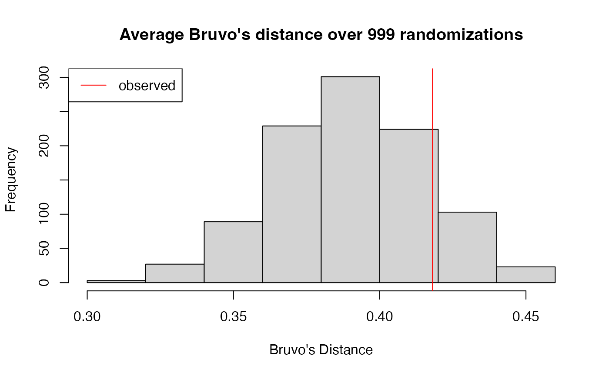
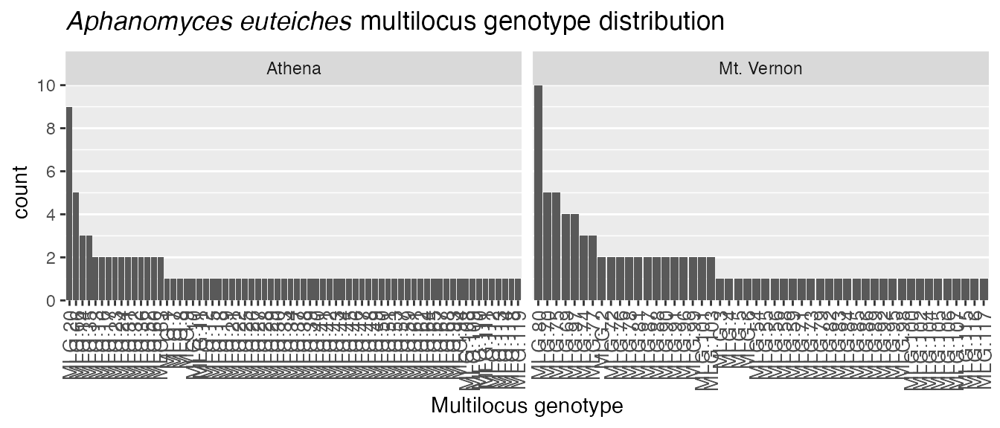
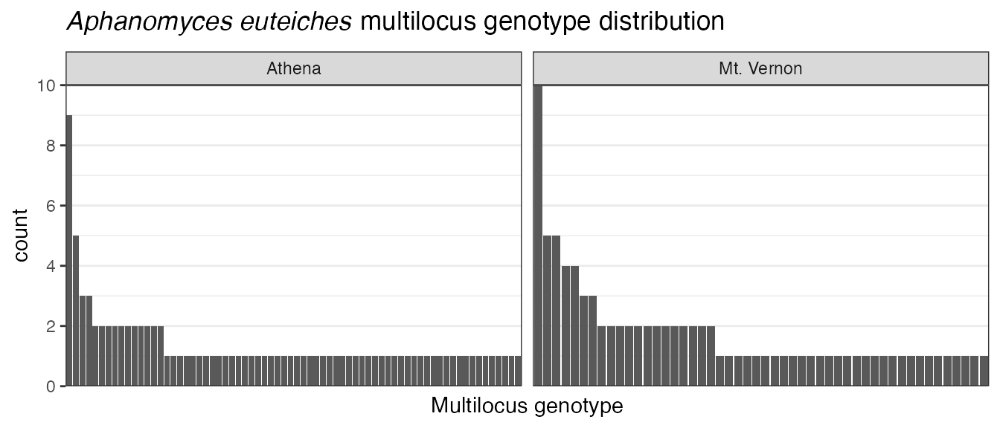
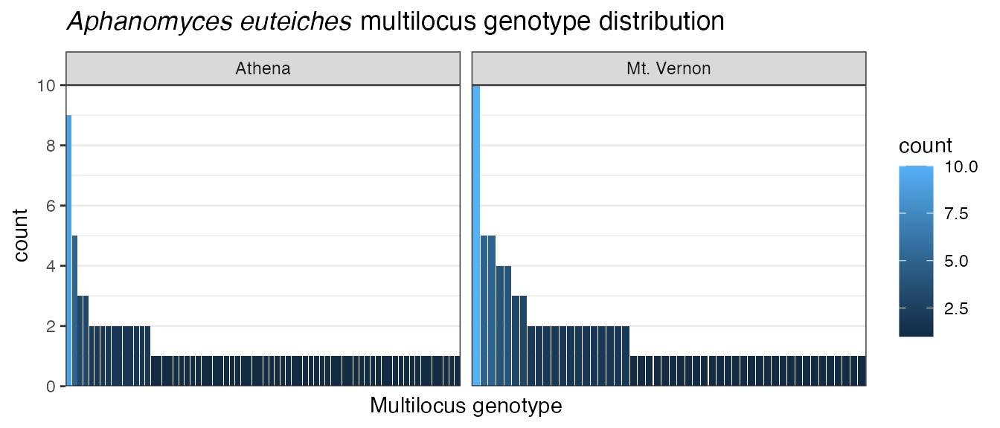

Data import and manipulation in poppr version `r packageVersion('poppr')`
Zhian N. Kamvar and Niklaus J. Grünwald
2024-03-18
Source:vignettes/poppr_manual.Rmd
poppr_manual.RmdAbstract
Poppr provides open-source, cross-platform tools for quick analysis of population genetic data enabling focus on data analysis and interpretation. While there are a plethora of packages for population genetic analysis, few are able to offer quick and easy analysis of populations with mixed reproductive modes. Poppr’s main advantage is the ease of use and integration with other packages such as adegenet and vegan, including support for novel methods such as clone correction, multilocus genotype analysis, calculation of Bruvo’s distance, and the index of association. New features in version 2.0 include generation of minimum spanning networks with reticulation, calculation of the index of association for genomic data, and filtering multilocus genotypes based on genetic distance.
Introduction
Purpose
Poppr is an R package with convenient functions for analysis of genetic data with mixed modes of reproduction including sexual and clonal reproduction. While there are many R packages in CRAN and other repositories with tools for population genetic analyses, few are appropriate for populations with mixed modes of reproduction. There are several stand-alone programs that can handle these types of data sets, but they are often platform specific and often only accept specific data types. Furthermore, a typical analysis often involves switching between many programs, and converting data to each specific format.
Poppr is designed to make analysis of populations with mixed reproductive modes more streamlined and user friendly so that the researcher using it can focus on data analysis and interpretation. Poppr allows analysis of haploid and diploid dominant/co-dominant marker data including microsatellites, Single Nucleotide Polymorphisms (SNP), and Amplified Fragment Length Polymorphisms (AFLP). To avoid creating yet another file format that is specific to a program, poppr was created on the backbone of the popular R package adegenet and can take all the file formats that adegenet can take (Genpop, Genetix, Fstat, and Structure) and newly introduces compatibility with GenAlEx formatted files (exported to CSV). This means that anything you can analyze in adegenet can be further analyzed with poppr.
The real power of poppr is in the data manipulation and analytic tools. Poppr has the ability to bootstrap, clone-censor, and subset data sets. With poppr you can also quickly calculate Bruvo’s distance, the index of association, and easily determine which multilocus genotypes are shared across populations.
In version 2.0, tools for genomic data were introduced (Zhian N. Kamvar, Brooks, and Grünwald 2015). These tools allow researchers to define what it means to be a clone lost in a sea of genomic data, generate bootstrapped dendrograms with any genetic distance, and calculate minimum spanning networks with reticulations to reveal the underlying population structure of your clonal data.
Resources
This vignette will cover all of the material you need to know to efficiently analyze data in poppr. For information on methods of analysis (eg. index of association, distance measures, AMOVA, …), please read the manual pages provided for each function.
As poppr expanded from version 1.0, the vignette also expanded to be 80+ pages. As a result, it became clear that over 22,000 words was less of a manual and more of a novella with a terrible plot. To remedy this, this vignette will focus only on data manipulation and a separate vignette, “algo”, has been written to give algorithmic details of analyses introduced with poppr.
As of spring 2014, Drs. Niklaus J. Grünwald, Sydney E. Everhart, and I have co- authored a primer on using R for population genetic analysis. It is located at https://grunwaldlab.github.io/Population_Genetics_in_R/ and the source code can be found on our github site.
Getting Help
If you have any questions or feedback, feel free to send a message to the poppr forum at https://groups.google.com/d/forum/poppr. You can submit bug reports there or on our github site: https://github.com/grunwaldlab/poppr/issues
Acknowledgments
Much thanks goes to Sydney E. Everhart for alpha testing, beta testing, feature requests, proofreading, data contribution, and moral support throughout the writing of this package and manual. Thanks also to Brian Knaus, Ignazio Carbone, David Cooke, Corine Schoebel, Jane Stewart, and Zaid Abdo for beta testing and feedback.
The following data sets are included in poppr:
Pinf(SSR, Phytophthora infestans)(Erica M. Goss et al. 2014)monpop(SSR, Monilinia fructicola)(Everhart and Scherm 2015)Aeut(AFLP, Aphanomyces eutieches)(N. J. Grünwald and Hoheisel 2006)Pram(SSR, Phytophthora ramorum)(Z. Kamvar et al. 2015; Erica M. Goss et al. 2009)
Citation
To cite poppr, please type in your R console:
citation(package = "poppr")## To cite poppr in publications or presentations, please specify poppr
## version 2.9.6 and with the following citation:
##
## Kamvar ZN, Tabima JF, Grünwald NJ. (2014) Poppr: an R package for
## genetic analysis of populations with clonal, partially clonal, and/or
## sexual reproduction. PeerJ 2:e281. doi: 10.7717/peerj.281
##
## Kamvar ZN, Brooks JC and Grünwald NJ (2015) Novel R tools for
## analysis of genome-wide population genetic data with emphasis on
## clonality. Front. Genet. 6:208. doi: 10.3389/fgene.2015.00208
##
## To see these entries in BibTeX format, use 'print(<citation>,
## bibtex=TRUE)', 'toBibtex(.)', or set
## 'options(citation.bibtex.max=999)'.The formal publication for the first version of poppr was published in the journal PeerJ: https://peerj.com/articles/281/ (Zhian N. Kamvar, Tabima, and Grünwald 2014). The new features in version 2.0 were published in Frontiers https://doi.org/10.3389/fgene.2015.00208 (Zhian N. Kamvar, Brooks, and Grünwald 2015).
Installation and Quick Start
Installation
This manual assumes you have installed R. If you have not, please refer to The CRAN home page at https://cran.r-project.org/. We also recommend the Rstudio IDE (https://rstudio.com/), which allows the user to view the R console, environment, scripts, and plots in a single window.
From CRAN
To install poppr from CRAN, select “Package Installer” from the menu “Packages & Data” in the GUI or type:
install.packages("poppr", repos = "https://cloud.r-project.org/")All dependencies will also be installed. In the unfortunate case this does not work, please consult https://cran.r-project.org/doc/manuals/R-admin.html#Installing-packages.
From GitHub
GitHub is a repository where you can find all stable and development versions of poppr.
Since poppr contains C code, it needs to be compiled, which means that you need a working C compiler. If you are on Linux, you should have that, but if you are on Windows or OSX, you might need to download some special tools:
- Windows
-
Download Rtools: https://cran.r-project.org/bin/windows/Rtools/
- OSX
-
Download Xcode: https://developer.apple.com/xcode/
To install from GitHub, you do not need to download the tarball since there is a package called devtools that will download and install the package for you directly from GitHub. After you have installed all dependencies (see above section), you should download devtools:
install.packages("devtools")Now you can execute the command install_github() with
the user and repository name:
devtools::install_github("grunwaldlab/poppr")Quick start
The author assumes that if you have reached this point in the manual,
then you have successfully installed R and poppr. Before
proceeding, you should be aware that R is case sensitive. This means
that the words “Case” and “case” are different. You should also know
where your R package library is located. In this section, you will learn
how to locate a file, import it to R, and make a first analysis using
the poppr() function.
What or where is my R package library?
R is as powerful as it is through a community of people who submit extra code called “packages” to help it do specific things. These packages live in a certain place on your computer called an R library. You can find out where this library is by typing
.libPaths()
Importing a file into R involves you knowing the path to your file
and then typing that into R’s console. getfile() will help
provide a point and click interface for selecting a file. This is simply
a tool to help you get started. As you get better with R, you might feel
that you don”t need it at all.
First, tell your computer to search R’s library, load the
poppr package, and use getfile():
## Loading required package: adegenet## Loading required package: ade4##
## /// adegenet 2.1.10 is loaded ////////////
##
## > overview: '?adegenet'
## > tutorials/doc/questions: 'adegenetWeb()'
## > bug reports/feature requests: adegenetIssues()## Registered S3 method overwritten by 'pegas':
## method from
## print.amova ade4## This is poppr version 2.9.6. To get started, type package?poppr
## OMP parallel support: unavailable
x <- getfile()A pop up window will appear like this1:

A popup window as it appears in OSX (Mountain Lion)
You should navigate to your R library and select the file called
“rootrot.csv”. If you don”t know where your the poppr package lives, you
can find it by typing find.package("poppr") into the R
command line. Once we select a file, the file name and its path will be
stored in the variable, x. We can confirm that by typing
x into R”s command line.
x## $files
## [1] "/path/to/R/poppr/files/rootrot.csv"
##
## $path
## [1] "/path/to/R/poppr/files"Here we can see that x is a list with two entries:
$files shows the files you selected and $path
shows the path to those files.
We will use x$files to access the file. The file is in
the GenAlEx format, so we will import it using
read.genalex() and then analyze it with the function
poppr() to get a table of diversity indices per
population.
myData <- read.genalex(x$files)
myData
popdata <- poppr(myData)The output of poppr() was assigned to the variable
popdata, so let”s look at the data.
popdata## Pop N MLG eMLG SE H G lambda E.5 Hexp Ia rbarD File
## 1 Athena_1 9 7 7.00 0.000 1.889 6.23 0.840 0.932 0.1081 2.92 0.210 myData
## 2 Athena_2 12 12 10.00 0.000 2.485 12.00 0.917 1.000 0.1999 4.16 0.128 myData
## 3 Athena_3 10 2 2.00 0.000 0.325 1.22 0.180 0.571 0.0107 2.00 1.000 myData
## 4 Athena_4 13 9 7.15 0.769 1.946 5.12 0.805 0.687 0.1012 5.49 0.372 myData
## 5 Athena_5 10 7 7.00 0.000 1.834 5.56 0.820 0.866 0.0802 4.53 0.353 myData
## 6 Athena_6 5 5 5.00 0.000 1.609 5.00 0.800 1.000 0.1143 2.46 0.190 myData
## 7 Athena_7 11 10 9.18 0.386 2.272 9.31 0.893 0.955 0.1584 2.13 0.086 myData
## 8 Athena_8 8 6 6.00 0.000 1.667 4.57 0.781 0.831 0.0791 3.86 0.323 myData
## 9 Athena_9 10 10 10.00 0.000 2.303 10.00 0.900 1.000 0.1532 2.82 0.118 myData
## 10 Athena_10 9 8 8.00 0.000 2.043 7.36 0.864 0.948 0.1230 2.85 0.137 myData
## 11 Mt. Vernon_1 10 9 9.00 0.000 2.164 8.33 0.880 0.952 0.1766 7.13 0.276 myData
## 12 Mt. Vernon_2 6 6 6.00 0.000 1.792 6.00 0.833 1.000 0.3940 20.65 0.492 myData
## 13 Mt. Vernon_3 8 6 6.00 0.000 1.667 4.57 0.781 0.831 0.1033 2.12 0.106 myData
## 14 Mt. Vernon_4 12 8 6.83 0.665 1.814 4.50 0.778 0.681 0.0823 3.01 0.255 myData
## 15 Mt. Vernon_5 17 7 5.54 0.828 1.758 5.07 0.803 0.848 0.0544 2.68 0.340 myData
## 16 Mt. Vernon_6 12 11 9.32 0.466 2.369 10.29 0.903 0.958 0.3001 19.50 0.467 myData
## 17 Mt. Vernon_7 12 9 7.82 0.649 2.095 7.20 0.861 0.870 0.0601 1.21 0.153 myData
## 18 Mt. Vernon_8 13 9 7.35 0.764 2.032 6.26 0.840 0.794 0.0430 1.15 0.169 myData
## 19 Total 187 119 9.61 0.612 4.558 68.97 0.986 0.720 0.3651 14.37 0.271 myDataThe fields you see in the output include:
Pop -Population name (Note that “Total” also means “Pooled”).N -Number of individuals observed.MLG -Number of multilocus genotypes (MLG) observed.eMLG -The number of expected MLG at the smallest sample size \(\geq 10\) based on rarefaction. (Hurlbert 1971)SE -Standard error based oneMLG(Heck, Belle, and Simberloff 1975)H -Shannon-Wiener Index of MLG diversity. (Shannon 1948)G -Stoddart and Taylor”s Index of MLG diversity. (Stoddart and Taylor 1988)lambda -Simpson”s index, \(\lambda\).E.5 -Evenness, \(E_5\). [Pielou (1975)](Ludwig and Reynolds 1988)(Niklaus J. Grünwald et al. 2003)Hexp -Nei”s 1978 Expected Heterozygosity. (Nei 1978)Ia -The index of association, \(I_A\). (Brown, Feldman, and Nevo 1980) (Smith et al. 1993) (Agapow and Burt 2001)rbarD -The standardized index of association, \(\bar{r}_d\). (Agapow and Burt 2001)
These fields are further described in the function
poppr. You can access the help page for poppr
by typing ?poppr in your R console.
One thing to note about this output is the NaN in the
column labeled SE. In R, NaN means “Not a
number”. This is produced from calculation of a standard error based on
rarefaction analysis. Occasionally, this calculation will encounter a
situation in which it must attempt to take a square root of a negative
number. Since the root of any negative number is not defined in the set
of real numbers, it must therefore have an imaginary component, \(i\). Unfortunately, R will not represent
the imaginary components of numbers unless you specifically tell it to
do so. By default, R represents these as NaN.
Import and Data types
Importing data into poppr {Get out of my dreams and into my R}
How does R represent data? {Objective: data}
Working with data in R means that these data have to be stored inside
an “object”, which is stored in the computer”s memory. Because of this,
it”s important to know the difference between a file
and an object. When anyone talking about importing a
file into R, they are referring to a spreadsheet or
text file that lives in a folder on your hard drive. Spreadsheet files
(saved as *.csv files) are normally imported through the R function
read.table(). The output of read.table() is a
data.frame. A data.frame is an
object represented in your computer’s memory. This
means that it only exists for as long as R is running.
The good thing about having objects stored in memory is that you can manipulate them in any way and not affect the source of those data. Since R is a scripted language (instead of point-and-click), any of your manipulations can be saved in a separate R file that can be easily adapted to new data. Of course, most data are not going to be entered into R manually. Usually they will be formatted in a manner that can be read by popular population genetics programs.
As previously mentioned, since poppr is based on
adegenet, it’s possible to read in the following file formats
into a genind object with the function
import2genind():
Fstat
Genepop
Genetix
Structure
Here, we introduce a new way of importing data into a
genind or genclone object from a GenAlEx
formatted file.
Function: read.genalex
A very popular program for population genetics is GenAlEx (https://biology-assets.anu.edu.au/GenAlEx/Welcome.html)
(Rod Peakall and Smouse 2012; R. Peakall and
Smouse 2006). GenAlEx runs within the Excel environment and can
be very powerful in its analyses. Poppr has added the ability
to read *.CSV files2 produced in the GenAlEx format. It can
handle data types containing regions and geographic coordinates, but
currently cannot import allelic frequency data from GenAlEx. Using the
poppr function read.genalex() will import your
data into adegenet”s genind object or
poppr”s genclone object (more information on that
below). For ways of formatting a GenAlEx file, see the manual here: https://biology-assets.anu.edu.au/GenAlEx/Download_files/GenAlEx%206.5%20Guide.pdf
Below is an example of the GenAlEx format. We will use the data set
called microbov from the adegenet package to
generate it. The data contains three demographic factors: Country,
Species and Breed contained within the @other slot
(detailed in the ‘other’ slot). We
will first set these as the population strata, define the population as
the combination of the strata, and then save a file to the desktop.
library("poppr")
data(microbov)
strata(microbov) <- data.frame(other(microbov)) # set the strata
microbov
genind2genalex(microbov, file = "~/Desktop/microbov.csv")## Extracting the table ... Writing the table to ~/Desktop/microbov.csv ... Done.
The first 15 individuals and 4 loci of the microbov data set. The first column contains the individual names, the second column contains the population names, and each subsequent column represents microsatellite genetic data. Highlighted in red is a list of populations and their relative sizes.
The GenAlEx format contains individuals in rows and loci in columns.
Individual data begins at row 4. Column A always contains individual
names and column B defines the population of each individual. Notice
here that the three demographic factors from the data have been
concatenated with a “_”. This allows us to import more than one
population factor to use as hierarchical levels in a
genclone object.
The First three rows contain information pertaining to the global data set. The only important information for poppr is the information contained in row 3 and the first three columns of row 1.
| A | B | C | D | ||
|---|---|---|---|---|---|
| 1 | # of Loci | # of Individuals | # of Populations | Pop1 Size | … |
| 2 | - | - | - | Pop1 Name | … |
| 3 | - | - | Locus 1 | … |
Highlighted in red in figure above are definitions of the number of populations and their respective sizes. As this is redundant information, we can remove it. Below is an example of a valid data set that can be imported into poppr.

The first 15 individuals and 4 loci of the microbov data set. This is the same figure as above, however the populations and counts have been removed from the header row and the third number in the header has been replaced by 1
All GenAlEx formatted data can be imported with the command
read.genalex(), detailed below:
read.genalex(genalex, ploidy = 2, geo = FALSE, region = FALSE,
genclone = TRUE, sep = ",", recode = FALSE)genalex -a *.CSV file exported from GenAlEx on your disk (For example:my_genalex_file.csv).ploidy -a number indicating the ploidy for the data set (eg 2 for diploids, 1 for haploids).geo -GenAlEx allows you to have geographic data within your file. To do this for poppr, you will need to follow the first format outlined in the GenAlEx manual and place the geographic data AFTER all genetic and demographic data with one blank column separating it (See the GenAlEx Manual for details). If you have geographic information in your file, set this flag toTRUEand it will be included within the resulting genind object in the@otherslot. (If you don”t know what that is, don”t worry. It will be explained later in the ‘other’ slot)region -To format your GenAlEx file to include regions, you can choose to include a separate column for regional data, or, since regional data must be in contiguous blocks, you can simply format it in the same way you would any other data (see the GenAlEx manual for details). If you have your file organized in this manner, select this option and the regional information will be stored in the@otherslot of the resultinggenindobject or be incorporated into the hierarchy of thegencloneobject.genclone -This flag will convert your data into agencloneobject (see Send in the clones for more info).sep -The separator argument for columns in your data. It defaults to “,”.recode -If your data is polyploid data, this gives you the option to recode it. (See About Polyploid Data for details)
Note that regional data and geographic data are not mutually exclusive. You can have both in one file, just make sure that they are on the same sheet and that the geographic data is always placed after all genetic and demographic data.
We have a short example of GenAlEx formatted data with no geographic
or regional formatting. We will first see where the data is using the
command system.file()
system.file("files/rootrot.csv", package="poppr")## [1] "/path/to/R/library/poppr/files/rootrot.csv"Now import the data into poppr like so:
rootrot <- read.genalex(system.file("files/rootrot.csv", package="poppr"))Executing rootrot shows that this file is now in
genclone format and can be used with any function in
poppr and adegenet
rootrot##
## This is a genclone object
## -------------------------
## Genotype information:
##
## 119 original multilocus genotypes
## 187 diploid individuals
## 56 dominant loci
##
## Population information:
##
## 1 stratum - Pop
## 18 populations defined -
## Athena_1, Athena_2, Athena_3, ..., Mt. Vernon_6, Mt. Vernon_7, Mt. Vernon_8Other ways of importing data
Adegenet already supports the import of
FSTAT, Structure,
Genpop, and Genetix formatted files,
so if you have data in those formats, you can import them using the
function import2genind. For sequence data, check if you can
use read.dna() from the ape package to import your
data. If you can, then you can use the adegenet function
DNAbin2genind(). If you don”t have any of these formats
handy, you can still import your data using R”s read.table
along with df2genind() from adegenet. For more
information, see adegenet’s “Getting Started” vignette.
Function: genind2genalex (exporting data)
Of course, being able to export data is just as useful as being able
to import it, so we have this handy little function that will write a
GenAlEx formatted file to wherever you desire.
WARNING: This will overwrite any file that exists with the same
name.
genind2genalex(gid, filename = "", overwrite = FALSE, quiet = FALSE,
pop = NULL, allstrata = TRUE, geo = FALSE, geodf = "xy",
sep = ",", sequence = FALSE)pop -agenindobject.filename -This is where you specify the path to the new file you wish to create. If you specify only a filename with no path, it will place the file in your current working directory.quiet -If this is set toFALSE, a status message will be printed to the console as the extraction progresses.pop -A vector specifying a custom population OR a formula specifying the strata to be combined in the new file.allstrata -This isTRUEby default and will combine all of the strata in your file unless you have specified a new population factor.geo -Set toTRUE, if you have a data frame or matrix in the@otherslot of yourgenindobject that contains geographic coordinates for all individuals or all populations. Setting this toTRUEmeans the resulting file will have two extra columns at the end of your file with geographic coordinates.geodf -The name of the data frame or matrix containing the geographic coordinates.sep -A separator to separate columns in the resulting file.
First, a simple example for the rootrot data we demonstrated in an earlier section:
genind2genalex(rootrot, "~/Desktop/rootrot.csv")## Extracting the table ... Writing the table to ~/Desktop/rootrot.csv ... Done.Here’s an example of exporting the nancycats data set into GenAlEx format with geographic information. If we look at the nancycats geographic information, we can see it”s coordinates for each population, but not each individual:
## x y
## P01 263.3498 171.10939
## P02 183.5028 122.40790
## P03 391.1050 254.70148
## P04 458.6121 41.72336
## P05 182.7769 219.08398
## P06 335.2121 344.83557
## P07 359.1662 375.36486
## P08 271.3345 67.89132
## P09 256.8169 150.02964
## P10 270.6086 17.00917
## P11 493.4544 237.25618
## P12 305.4510 85.33663
## P13 462.9674 86.79040
## P14 429.5768 291.04587
## P15 531.2003 115.13903
## P16 407.8003 99.87438
## P17 345.3745 251.79393To export it:
genind2genalex(nancycats, "~/Desktop/nancycats_pop_xy.csv", geo = TRUE)## Extracting the table ... Writing the table to ~/Desktop/nancycats_pop_xy.csv ... Done.If we wanted to assign a geographic coordinate to each individual, we can use this trick knowing that there are 17 populations in the data set:
## x y
## P17 345.3745 251.7939
## P17 345.3745 251.7939
## P17 345.3745 251.7939
## P17 345.3745 251.7939
## P17 345.3745 251.7939
## P17 345.3745 251.7939Now we can export it to a different file.
genind2genalex(nan2, "~/Desktop/nancycats_inds_xy.csv", geo = TRUE)## Extracting the table ... Writing the table to ~/Desktop/nancycats_inds_xy.csv ... Done.Getting to know adegenet”s genind object
Since poppr was built around adegenet”s framework,
it is important to know how adegenet stores data in the
genind object, as that is the object used by
poppr. To create a genind object,
adegenet takes a data frame of genotypes (rows) across multiple
loci (columns) and converts them into a matrix of individual allelic
counts at each locus (Jombart 2008).
For example, Let’s say we had data with 3 diploid individuals each with 3 loci that had 3, 4, and 5 allelic states respectively:
| locus1 | locus2 | locus3 | |
|---|---|---|---|
| 1 | 101/101 | 201/201 | 301/302 |
| 2 | 102/103 | 202/203 | 301/303 |
| 3 | 102/102 | 203/204 | 304/305 |
The resulting genind object would contain a matrix that
has 3 rows and 12 columns. Below is a schematic of what that would look
like. Each column represents a separate allele, each row represents an
individual and each color represents a different locus.
When we look at the data derived from table above, we see that we have a matrix of individual allele counts at each locus.
## locus1.101 locus1.102 locus1.103 locus2.201 locus2.202 locus2.203 locus2.204 locus3.301
## 1 2 0 0 2 0 0 0 1
## 2 0 1 1 0 1 1 0 1
## 3 0 2 0 0 0 1 1 0
## locus3.302 locus3.303 locus3.304 locus3.305
## 1 1 0 0 0
## 2 0 1 0 0
## 3 0 0 1 1At each locus, the allele counts for each individual sum to the ploidy, \(p\). Homozygotes are denoted as having an allele count of \(p\) at a single allele within a locus, while heterozygotes have their allele counts represented as \(<p\) where \(p\) = ploidy across multiple alleles in a single locus. Along with this matrix, are elements that define the names of the individuals, loci, alleles, and populations. If you wish to know more, see the adegenet “Getting Started” manual.
The other slot
The other slot is a place in the genind object that can
be used to store useful information about the data. We saw earlier that
it could store demographic information, now let’s explore a different
example. Bruvo’s distance is based off of a stepwise mutation model for
microsatellites. This requires us to know the length of the repeat of
each locus. We could store the repeat lengths in a separate variable in
our R environment, but we are at risk of losing that. One way to prevent
it from being lost would be to place it in the “other” slot. For the
purpose of this example, we will use the “nancycats” data set from the
adegenet package and assume that it has di-nucleotide repeats
at all of its loci.
## $xy
## x y
## P01 263.3498 171.10939
## P02 183.5028 122.40790
## P03 391.1050 254.70148
## P04 458.6121 41.72336
## P05 182.7769 219.08398
## P06 335.2121 344.83557
## P07 359.1662 375.36486
## P08 271.3345 67.89132
## P09 256.8169 150.02964
## P10 270.6086 17.00917
## P11 493.4544 237.25618
## P12 305.4510 85.33663
## P13 462.9674 86.79040
## P14 429.5768 291.04587
## P15 531.2003 115.13903
## P16 407.8003 99.87438
## P17 345.3745 251.79393## [1] 2 2 2 2 2 2 2 2 2## $xy
## x y
## P01 263.3498 171.10939
## P02 183.5028 122.40790
## P03 391.1050 254.70148
## P04 458.6121 41.72336
## P05 182.7769 219.08398
## P06 335.2121 344.83557
## P07 359.1662 375.36486
## P08 271.3345 67.89132
## P09 256.8169 150.02964
## P10 270.6086 17.00917
## P11 493.4544 237.25618
## P12 305.4510 85.33663
## P13 462.9674 86.79040
## P14 429.5768 291.04587
## P15 531.2003 115.13903
## P16 407.8003 99.87438
## P17 345.3745 251.79393
##
## $repeat_lengths
## [1] 2 2 2 2 2 2 2 2 2The genclone object {send in the clones}
The genclone class was defined in order to make working
with clonal organisms more intuitive. It is built off of the
genind object and has dedicated slots for defined
multilocus genotypes. The name genclone refers to the fact
that it has the ability to handle genotypes of clonal organisms (but it
is also used for sexual populations).
In previous versions of poppr, the genclone
object contained a hierarchy slot as well. This slot was moved to
adegenet and its name was changed to “strata”. This slot allows
you to carry around several definitions for populations in the same data
set.
The function as.genclone allows the user to convert a
genind object to a genclone object. The
following example will demonstrate that the genclone object
is an extension of the genind object as well as the
advantages of having populations pre-defined in your data set.
Function: as.genclone
as.genclone(x, ..., mlg, mlgclass = TRUE)x - a
genindobject to be converted.… - any arguments to be passed to the
genindconstructor.mlg - a vector representing the multilocus genotype definitions of your data.
mlgclass - if
TRUE, the MLGs represented in your object will be converted to an MLG class object, which allows for custom MLG definitions.
Let”s show an example of a genclone object. First, we
will take an existing genind object and convert it using
the function as.genclone (We can also use the function read.genalex()to import as
genclone or genind objects). We will use the
Aeut data set because it is a clonal data set that has a
simple population strata (N. J. Grünwald and
Hoheisel 2006). The data set is here: https://doi.org/10.6084/m9.figshare.877104 and it is
AFLP data of the root rot pathogen Aphanomyces euteiches
collected from two different fields in NW Oregon and W Washington, USA.
These fields were divided up into subplots from which samples were
collected. The fields represent the population and the subplots
represent the subpopulation. Let”s take a look at what the
genind object looks like:
## /// GENIND OBJECT /////////
##
## // 187 individuals; 56 loci; 56 alleles; size: 68.9 Kb
##
## // Basic content
## @tab: 187 x 56 matrix of allele counts
## @loc.n.all: number of alleles per locus (range: 56-56)
## @ploidy: ploidy of each individual (range: 2-2)
## @type: PA
## @call: old2new_genind(object = x, donor = new(class(x)))
##
## // Optional content
## @pop: population of each individual (group size range: 90-97)
## @other: a list containing: population_hierarchyWe can see that there is a data frame in the @other slot
called “population_hierarchy”. This is left over from poppr
version 1.x behavior. Since the genind object now has a
@strata slot, we can use it to set the stratification
(previously called “hierarchy”).
## /// GENIND OBJECT /////////
##
## // 187 individuals; 56 loci; 56 alleles; size: 72.7 Kb
##
## // Basic content
## @tab: 187 x 56 matrix of allele counts
## @loc.n.all: number of alleles per locus (range: 56-56)
## @ploidy: ploidy of each individual (range: 2-2)
## @type: PA
## @call: old2new_genind(object = x, donor = new(class(x)))
##
## // Optional content
## @pop: population of each individual (group size range: 90-97)
## @strata: a data frame with 2 columns ( Pop, Subpop )
## @other: a list containing: population_hierarchyNow we can convert this to a genclone object, which will
store information about our multilocus genotypes for us.
agc <- as.genclone(Aeut)
agc##
## This is a genclone object
## -------------------------
## Genotype information:
##
## 119 original multilocus genotypes
## 187 diploid individuals
## 56 dominant loci
##
## Population information:
##
## 2 strata - Pop, Subpop
## 2 populations defined - Athena, Mt. VernonIf we wanted to, we could also convert it back to a
genind object.
genclone2genind(agc)## /// GENIND OBJECT /////////
##
## // 187 individuals; 56 loci; 56 alleles; size: 83.7 Kb
##
## // Basic content
## @tab: 187 x 56 matrix of allele counts
## @loc.n.all: number of alleles per locus (range: 56-56)
## @ploidy: ploidy of each individual (range: 2-2)
## @type: PA
## @call: genclone2genind(x = agc)
##
## // Optional content
## @pop: population of each individual (group size range: 90-97)
## @strata: a data frame with 2 columns ( Pop, Subpop )
## @other: a list containing: population_hierarchyAbout polyploid data
WARNING
Treat polyploid data with care. Please read this section carefully and consult the help pages for all functions mentioned here.
With diploid or haploid data, genotypes are unambiguous. It is often clear when it is homozygous or heterozygous. With polyploid data, genotypes can be ambiguous. For example, a tetraploid individual with the apparent genotype of A/B could actually have one of three genotypes: A/A/A/B, A/A/B/B, or A/B/B/B. This ambiguity prevents a researcher from accurately calling all alleles present. In adegenet, it was previously difficult to import polyploid data because of this ambiguity as data was required to be unambiguous or missing.
A solution to this problem is to code missing alleles as “0”. An
example of this is found within the Pinf data set in
poppr (Erica M. Goss et al.
2014). First, we will look at where we have polyploid allele
calls.
data(Pinf)
Pinf##
## This is a genclone object
## -------------------------
## Genotype information:
##
## 72 multilocus genotypes
## 86 tetraploid individuals
## 11 codominant loci
##
## Population information:
##
## 2 strata - Continent, Country
## 2 populations defined - South America, North America
ptab <- info_table(Pinf, type = "ploidy", plot = TRUE)We look at the last six samples over two loci, Pi63 (3 alleles, triploid) and Pi70 (3 alleles, diploid) to examine how the data is represented.
## Pi63.000 Pi63.148 Pi63.151 Pi63.157 Pi70.000 Pi70.189 Pi70.192 Pi70.195
## PiPE22 1 1 1 1 2 1 1 0
## PiPE23 1 1 1 1 2 1 1 0
## PiPE24 1 1 1 1 2 1 1 0
## PiPE25 1 1 1 1 2 1 1 0
## PiPE26 2 0 0 2 2 0 1 1
## PiPE27 1 1 1 1 2 1 1 0Each column in this data represents a different allele at a
particular locus. Pi63.148 is the allele 148
at locus Pi63. Each row is an individual. The numbers
represent the fraction of a given allele that makes up the individual
genotype at a particular locus. What we can see here is that the number
of columns is 8 when we expect only 6 (2 loci x 3 alleles). The first
allele at each locus is 000. Let’s take a look at the data
in a human-readable format.
## Pi63 Pi70
## PiPE22 000/148/151/157 000/000/189/192
## PiPE23 000/148/151/157 000/000/189/192
## PiPE24 000/148/151/157 000/000/189/192
## PiPE25 000/148/151/157 000/000/189/192
## PiPE26 000/000/157/157 000/000/192/195
## PiPE27 000/148/151/157 000/000/189/192It”s more clear now that we have a data set of tetraploid individuals
where some genotypes appear diploid (000/000/157/157) and
some appear triploid (000/148/151/157). The tetraploid
genotype is padded with zeroes to make up the difference in ploidy.
This method allows Bruvo’s Distance (Bruvo et
al. 2004) and the Index of Association (Brown, Feldman, and Nevo 1980; Smith et al. 1993;
Agapow and Burt 2001) to work with polyploids as they
specifically recognize the zeroes as being missing data. A side effect,
unfortunately is that the extra zeroes appear as extra alleles. As this
affects all frequency-based statistics (except for the ones noted
above), the user should reformat their data set with the function
recode_polyploids, which will remove the zeroes.
Pinf_rc <- recode_polyploids(Pinf, newploidy = TRUE)
Pinf_rc # Notice that the new ploidy is accounted for.##
## This is a genclone object
## -------------------------
## Genotype information:
##
## 72 multilocus genotypes
## 86 diploid (55) and triploid (31) individuals
## 11 codominant loci
##
## Population information:
##
## 2 strata - Continent, Country
## 2 populations defined - South America, North America## Pi63.148 Pi63.151 Pi63.157 Pi70.189 Pi70.192 Pi70.195
## PiPE22 1 1 1 1 1 0
## PiPE23 1 1 1 1 1 0
## PiPE24 1 1 1 1 1 0
## PiPE25 1 1 1 1 1 0
## PiPE26 0 0 2 0 1 1
## PiPE27 1 1 1 1 1 0Below, we show the observed genotypes:
## Pi63 Pi70
## PiPE22 148/151/157 189/192
## PiPE23 148/151/157 189/192
## PiPE24 148/151/157 189/192
## PiPE25 148/151/157 189/192
## PiPE26 157/157 192/195
## PiPE27 148/151/157 189/192If you have imported your data as recoded polyploid data, you can use the argument “addzero” to fill out the ploidy:
## Pi63.0 Pi63.157 Pi63.148 Pi63.151 Pi70.0 Pi70.192 Pi70.189 Pi70.195
## PiPE22 0 1 1 1 1 1 1 0
## PiPE23 0 1 1 1 1 1 1 0
## PiPE24 0 1 1 1 1 1 1 0
## PiPE25 0 1 1 1 1 1 1 0
## PiPE26 1 2 0 0 1 1 0 1
## PiPE27 0 1 1 1 1 1 1 0Data Manipulation
One tedious aspect of population genetic analysis is the need for repeated data manipulation. Poppr includes novel functions for clone- censoring your data sets, removing genotypes or loci with missing data, removing uninformative loci, and shuffling populations.
Replace or remove missing data {Inside the golden days of missing data}
A data set without missing data is always ideal, but often not
achievable. The poppr function missingno exists to
handle missing data. Missing data can mean different things based on
your data type. For microsatellites, missing data might represent any
source of error that could cause a PCR product to not amplify in gel
electrophoresis, which may or may not be biologically relevant. For a
DNA alignment, missing data could mean something as simple as an
insertion or deletion, which is biologically relevant. The choice to
exclude or estimate data has very different implications for the type of
data you have.
Treatment of Missing data is a non-trivial task. You should understand the nature of missing data in your data set before treatment.
Function: missingno
missingno is a function that serves as a way to exclude
specific areas that contain systematic missing data. There are four
methods available,
missingno(pop, type = "loci", cutoff = 0.05, quiet = FALSE, freq = FALSE)pop - a genind object.
type - This could be one of five options:
“loci” This is to be used for a data set that has systematic problems with certain loci that contain null alleles or simply failed to amplify. This will remove loci with a defined threshold of missing data from the data set.
“geno” This is to be used for genotypes (individuals) in your data set where many null alleles are present. Individuals with a defined threshold missing data will be removed.
“asis” This argument will retain missing data in your data set. It”s useful for functions that utilize
missingnointernally, such asmlg.filter(),poppr.amova(), oraboot().“mean” This replaces missing data with the mean allele frequencies in the entire data set .
“zero” or “0” This replaces missing data with zero, signifying a new allele .
cutoff - This is a numeric value from 0 to 1 indicating
the percent allowable missing data for either loci or genotypes. If you
have, for example, two loci containing missing 5% and 10% missing data,
respectively and you set cutoff = 0.05,
missingno will remove the second locus. Percent missing
data for genotypes is considered the percent missing loci over number of
total loci.
quiet - When this is set to FALSE, the
number of missing values replaced will be printed to screen if the
method is “zero” or “mean”. It will print the number of loci or
individuals removed if the method is “loci” or “geno”.
freq - This is used for compatibility with the
tab() method for genind object. It will
convert counts of alleles to frequencies of alleles, rendering an object
that will return warnings.
Let’s take a look at what this does by focusing in on areas with
missing data. We”ll use the data set nancycats as an
example. Using the poppr function info_table, we
can assess missing data within populations.
library("poppr")
data(nancycats)
info_table(nancycats, plot = TRUE)## Locus
## Population fca8 fca23 fca43 fca45 fca77 fca78 fca90 fca96 fca37 Mean
## P01 0.200 . . . . . . . . 0.022
## P02 . . . . . . . . . .
## P03 . . . . . . . . . .
## P04 . . . . . . . . . .
## P05 . . . . . . . . . .
## P06 . . . . . . . . . .
## P07 0.357 . . . . . . . . 0.040
## P08 . . . . . . . . . .
## P09 . . . . . . . . . .
## P10 . . . . . . . . . .
## P11 0.150 . . 0.400 . . . 0.050 . 0.067
## P12 0.214 . . . . . . . . 0.024
## P13 . . . . . . . . . .
## P14 0.412 . . . . . . . . 0.046
## P15 . . . . . . . . . .
## P16 . . . . . . . . . .
## P17 . . . 1.000 . . . 0.615 . 0.179
## Total 0.084 . . 0.089 . . . 0.038 . 0.023We can see that locus fca8 has a lot of missing data. To demonstrate
the function missingno(), we will zoom into the first five
individuals at the first locus.
tab(nancycats)[1:5, 8:13]## fca8.133 fca8.135 fca8.137 fca8.139 fca8.141 fca8.143
## N215 NA NA NA NA NA NA
## N216 NA NA NA NA NA NA
## N217 0 1 0 0 0 1
## N218 1 1 0 0 0 0
## N219 1 1 0 0 0 0When looking at this data set, recall how a genind
object is formatted. You have a matrix representing counts of alleles.
For diploids, if you see 1, that means it is heterozygous at that
allele, and a 2 means it”s homozygous. Here we see three heterozygotes
and two individuals with missing data (indicated by NA). Let”s look at
what happens when we exclude loci and genotypes with >5% missing
data).
nanloci <- missingno(nancycats, "loci")
nangeno <- missingno(nancycats, "geno")
tab(nanloci)[1:5, 8:13]## fca23.144 fca23.146 fca23.148 fca23.150 fca43.133 fca43.135
## N215 0 1 0 0 0 0
## N216 0 2 0 0 0 0
## N217 0 1 0 0 0 0
## N218 0 0 0 0 0 0
## N219 0 1 0 0 0 0Notice how we now see columns named fca23.128 and fca23.130. This is
showing us another locus because we have removed the first. Recall from
the summary table that the first locus had 16 alleles, and the second
had 11. Now that we’ve removed loci containing missing data, all others
have shifted over.
Let’s look at the loci names and number of individuals.
nInd(nanloci) # Individuals## [1] 237
locNames(nanloci) # Names of the loci## [1] "fca23" "fca43" "fca77" "fca78" "fca90" "fca96" "fca37"You can see that the number of individuals stayed the same but the loci “fca8”, “fca45”, and “fca96” were removed. Let’s look at what happened when we removed individuals.
tab(nangeno)[1:5, 8:13]## fca8.133 fca8.135 fca8.137 fca8.139 fca8.141 fca8.143
## N217 0 1 0 0 0 1
## N218 1 1 0 0 0 0
## N219 1 1 0 0 0 0
## N220 0 1 0 0 0 1
## N221 0 2 0 0 0 0
nInd(nangeno) # Individuals## [1] 199
locNames(nangeno) # Names of the loci## [1] "fca8" "fca23" "fca43" "fca45" "fca77" "fca78" "fca90" "fca96" "fca37"We can see here that the number of individuals decreased, yet we have the same number of loci. Notice how the frequency matrix changes in both scenarios? In the scenario with “loci”, we removed several columns of the data set, and so with our sub-setting, we see alleles from the second locus. In the scenario with “geno”, we removed several rows of the data set so we see other individuals in our sub-setting.
Extract populations {Divide (populations) and conquer (your analysis)}
This poppr function popsub makes subsetting
genind or genlight objects by population easier:
Function: popsub
The command popsub is powerful in that it allows you to
choose exactly what populations you choose to include or exclude from
your analyses. As with many R functions, you can also use this within a
function to avoid creating a new variable to keep track of.
popsub(gid, sublist = "ALL", exclude = NULL, blacklist = NULL,
mat = NULL, drop = TRUE)pop -agenindobject.sublist -vector of populations or integers representing the populations in your data set you wish to retain. For example:sublist = c(pop_z, pop_y)orsublist = 1:2.exclude -vector of populations or integers representing the populations in your data set you wish to exclude. This can take the same type of arguments as sublist, and can be used in conjunction with sublist for when you want a range of populations, but know that there is one in there that you do not want to analyze. For example:sublist = 1:15, exclude = pop_x. One very useful thing about the exclude is that it allows the user to be extremely paranoid about the data. You can set the exclude to contain populations that are not even in your data set and it will still work!mat -A matrix produced from themlg.tablefunction. This overrides the pop argument and subsets this table instead.
To demonstrate this tool, we’ll use the H3N2 virus data set provided in adegenet. It contains a data frame in the “other” slot called “x” that contains information about the year of epidemic, country, etc.
data("H3N2", package = "adegenet")
strata(H3N2) <- data.frame(other(H3N2)$x)
H3N2## /// GENIND OBJECT /////////
##
## // 1,903 individuals; 125 loci; 334 alleles; size: 4.1 Mb
##
## // Basic content
## @tab: 1903 x 334 matrix of allele counts
## @loc.n.all: number of alleles per locus (range: 2-4)
## @loc.fac: locus factor for the 334 columns of @tab
## @all.names: list of allele names for each locus
## @ploidy: ploidy of each individual (range: 1-1)
## @type: codom
## @call: .local(x = x, i = i, j = j, drop = drop)
##
## // Optional content
## @strata: a data frame with 17 columns ( accession, length, host, segment, subtype, country, ... )
## @other: a list containing: x xy epidWe will demonstrate the popsub functionality by setting
the population factor to “country”. Note, in this section, I am naming
the variables staring with “v” indicating “virus”.
## [1] "Japan" "USA" "Finland" "China" "South Korea"
## [6] "Norway" "Taiwan" "France" "Latvia" "Netherlands"
## [11] "Bulgaria" "Turkey" "United Kingdom" "Denmark" "Austria"
## [16] "Canada" "Italy" "Russia" "Bangladesh" "Egypt"
## [21] "Germany" "Romania" "Ukraine" "Czech Republic" "Greece"
## [26] "Iceland" "Ireland" "Sweden" "Nepal" "Saudi Arabia"
## [31] "Switzerland" "Iran" "Mongolia" "Spain" "Slovenia"
## [36] "Croatia" "Algeria"## [1] "USA" "Canada"If we want to see the population size, we can use the
adegenet function nInd():
## NorthAmerica Total
## 665 1903You can see that the population factors are correct and that the size of the data set is considerably smaller. Let’s see the data set without the North American countries.
## [1] "Japan" "Finland" "China" "South Korea" "Norway"
## [6] "Taiwan" "France" "Latvia" "Netherlands" "Bulgaria"
## [11] "Turkey" "United Kingdom" "Denmark" "Austria" "Italy"
## [16] "Russia" "Bangladesh" "Egypt" "Germany" "Romania"
## [21] "Ukraine" "Czech Republic" "Greece" "Iceland" "Ireland"
## [26] "Sweden" "Nepal" "Saudi Arabia" "Switzerland" "Iran"
## [31] "Mongolia" "Spain" "Slovenia" "Croatia" "Algeria"Let”s make sure that the number of individuals in both data sets is equal to the number of individuals in our original data set:
## [1] TRUENow we have data sets with and without North America. Let’s try
something a bit more challenging. Let’s say that we want the first 10
populations in alphabetical order, but we know that we still don”t want
any countries in North America. We can easily do this by using the
base function sort.
## [1] "Algeria" "Austria" "Bangladesh" "Bulgaria" "Canada"
## [6] "China" "Croatia" "Czech Republic" "Denmark" "Egypt"## [1] "China" "Bulgaria" "Denmark" "Austria" "Bangladesh"
## [6] "Egypt" "Czech Republic" "Croatia" "Algeria"And that, is how you subset your data with poppr!
Clone-censor data sets {Attack of the clone correction}
Clone correction refers to the ability of keeping one observation of each MLG in a given population (or sub-population). Clone correcting can be hazardous if its done by hand (even on small data sets) and it requires a defined population hierarchy to get relevant results. Poppr has a clone correcting function that that will correct down to the lowest level of any defined population hierarchy. Note that clone correction in poppr is sensitive to missing data, as it treats all missing data as a single extra allele.
This function will create new data sets, but it is also utilized by
the functions poppr() and poppr.amova()
natively.
Function: clonecorrect
This function will return a clone corrected data set corrected for
the lowest population level. Population levels are specified with the
hier flag. You can choose to combine the population
hierarchy to analyze at the lowest population level by choosing
combine = TRUE.
clonecorrect(pop, strata = 1, combine = FALSE, keep = 1)pop -agencloneobject with a defined hierarchy or agenindobject that has a population hierarchy data frame in the@otherslot. Note, thegenindobject does not necessarily require a population factor to begin with.strata -A hierarchical formula (eg.\simPop/Subpop), representing the hierarchical levels in your data.combine -Do you want to combine the population hierarchy? If it”s set toFALSE(default), you will be returned an object with the top most hierarchical level as a population factor unless the keep argument is defined. If set toTRUE, the hierarchy will be returned combined.keep -This flag is to be used if you setcombine = FALSE. This will tell clone correct to return a specific combination of your hierarchy defined as integers. For example, imagine a hierarchy that needs to be clone corrected at three levels: Population by Year by Month. If you wanted to only run an analysis on the Population level, you would setkeep = 1since Population is the first level of the hierarchy. On the other hand, if you wanted to run analysis on Year by Month, you would setkeep = 2:3since those are the second and third levels of the hierarchy.
Let”s look at ways to clone-correct our data. We”ll look at our
A. euteichies data that we used in an earlier section since
that data set is known to include clonal populations (N. J. Grünwald and Hoheisel 2006). Try playing
around with the data and see what different combinations of the
strata, and keep flags produce. Below, I will
give three examples of clone corrections at the sample level with
respect to field, at the field level, and finally, at the level of the
entire data set.
First, we will examine the original data set.
data(Aeut)
strata(Aeut) <- data.frame(other(Aeut)$population_hierarchy[-1])
Aeut## /// GENIND OBJECT /////////
##
## // 187 individuals; 56 loci; 56 alleles; size: 72.7 Kb
##
## // Basic content
## @tab: 187 x 56 matrix of allele counts
## @loc.n.all: number of alleles per locus (range: 56-56)
## @ploidy: ploidy of each individual (range: 2-2)
## @type: PA
## @call: old2new_genind(object = x, donor = new(class(x)))
##
## // Optional content
## @pop: population of each individual (group size range: 90-97)
## @strata: a data frame with 2 columns ( Pop, Subpop )
## @other: a list containing: population_hierarchyWhen you read in data with read.genalex(), the default
is to represent it in a genclone object. Since the
clonecorrect() function works on multilocus genotype
definitions, It’s more efficient to convert it to a
genclone object first. We will also rename the strata to
“field” and “sample” to make the biological relevance of the data
clearer.
aphan <- as.genclone(Aeut)
nameStrata(Aeut) <- ~field/sampleNow we correct by sample with respect to field and keep the field as the population.
clonecorrect(aphan, strata = ~Pop/Subpop)##
## This is a genclone object
## -------------------------
## Genotype information:
##
## 119 original multilocus genotypes
## 141 diploid individuals
## 56 dominant loci
##
## Population information:
##
## 2 strata - Pop, Subpop
## 2 populations defined - Athena, Mt. Vernon
# Your turn: Use the same stratification and use combine = TRUE and then
# keep = 1:2. Is there any difference?Correcting by field. Notice how the number of MLG is much closer to our census.
clonecorrect(aphan, strata = ~Pop)##
## This is a genclone object
## -------------------------
## Genotype information:
##
## 119 original multilocus genotypes
## 120 diploid individuals
## 56 dominant loci
##
## Population information:
##
## 2 strata - Pop, Subpop
## 2 populations defined - Athena, Mt. VernonCorrecting over whole data set. Our MLG is equal to our census.
clonecorrect(aphan, strata = NA)##
## This is a genclone object
## -------------------------
## Genotype information:
##
## 119 original multilocus genotypes
## 119 diploid individuals
## 56 dominant loci
##
## Population information:
##
## 2 strata - Pop, Subpop
## 2 populations defined - Athena, Mt. VernonPermutations and bootstrap resampling {every day I’m shuffling (data sets)}
A common null hypothesis for populations with mixed reproductive modes is panmixia, or to put it simply: lots of sex. Poppr randomly shuffles data sets in order to calculate P-values for the index of association (\(I_A\) and \(\bar{r} _d\)) (Agapow and Burt 2001) using 4 different methods:
| method | strategy | units sampled |
|---|---|---|
| 1 | permutation | alleles |
| 2 | simulation | alleles |
| 3 | simulation | alleles |
| 4 | permutation | genotypes |
These methods are detailed below. We will create a dummy data set to be shuffled by each example below. Let”s assume a single diploid locus with four alleles (1, 2, 3, 4) with the frequencies of 0.1, 0.2, 0.3, and 0.4, respectively:
| A1/A2 | |
|---|---|
| 1 | 4/4 |
| 2 | 4/1 |
| 3 | 4/3 |
| 4 | 2/2 |
| 5 | 3/3 |
The 4 methods are detailed below.
Function: shufflepop
shufflepop(pop, method = 1)pop -agenindobject.-
method -a number indicating the method of sampling you wish to use. The following methods are available for use:-
Permute Alleles (default) This is a sampling scheme that will permute alleles within the locus.
A1/A2 1 3/4 2 2/3 3 4/4 4 2/1 5 3/4 A1/A2 1 1/3 2 2/4 3 3/4 4 4/3 5 4/2 As you can see, The heterozygosity has changed, yet the allelic frequencies remain the same. Overall this would show you what would happen if the sample you had underwent panmixis within this sample itself.
-
Parametric Bootstrap The previous scheme reshuffled the observed sample, but the parametric bootstrap draws samples from a multinomial distribution using the observed allele frequencies as weights.
A1/A2 1 1/3 2 3/3 3 3/2 4 4/4 5 4/2 A1/A2 1 3/4 2 2/3 3 4/2 4 4/4 5 4/2 Notice how the heterozygosity has changed along with the allelic frequencies. The frequencies for alleles 3 and 4 have switched in the first data set, and we”ve lost allele 1 in the second data set purely by chance! This type of sampling scheme attempts to show you what the true population would look like if it were panmictic and your original sample gave you a basis for estimating expected allele frequencies. Since estimates are made from the observed allele frequencies, small samples will produce skewed results.
-
Non-Parametric Bootstrap The third method is sampling with replacement, again drawing from a multinomial distribution, but with no assumption about the allele frequencies.
A1/A2 1 1/3 2 3/3 3 3/1 4 2/2 5 3/1 A1/A2 1 1/3 2 3/1 3 2/3 4 2/1 5 4/3 Again, heterozygosity and allele frequencies are not maintained, but now all of the alleles have a 1 in 4 chance of being chosen.
-
Multilocus permutation This is called Multilocus permutation because it does the same thing as the permutation analysis in the program multilocus by Paul Agapow and Austin Burt (Agapow and Burt 2001). This will shuffle the genotypes at each locus.
A1/A2 1 3/3 2 4/1 3 2/2 4 4/4 5 4/3 A1/A2 1 4/4 2 2/2 3 3/3 4 4/3 5 4/1 Note that you have the same genotypes after shuffling, so at each locus, you will maintain the same allelic frequencies and heterozygosity. So, in this sample, you will only see a homozygote with allele 2. This also ensures that the P-values associated with \(I_A\) and \(\bar{r} _d\) are exactly the same. This method assumes that alleles are not independently assorting within individuals. This strategy is useful if you suspect the population is inbreeding (Jerome Goudet, personal communication).
-
These shuffling schemes have been implemented for the index of
association, but there may be other summary statistics you can use
shufflepop for. All you have to do is use the function
replicate. Let”s use average Bruvo”s distance with the
first population of the data set nancycats as an
example:
data(nancycats)
nan1 <- popsub(nancycats, 1)
reps <- rep(2, 9) # Assuming dinucleotide repeats.
observed <- mean(bruvo.dist(nan1, replen = reps))
observed## [1] 0.4180619You could use this method to replicate the resampling 999 times and then create a histogram to visualize a distribution of what would happen under different assumptions of panmixia.
set.seed(9999)
bd.test <- replicate(999, mean(bruvo.dist(shufflepop(nan1, method = 2), replen = reps)))
hist(bd.test, xlab = "Bruvo's Distance", main = "Average Bruvo's distance over 999 randomizations")
abline(v = observed, col = "red")
legend('topleft', legend="observed", col="red", lty = 1)
Removing uninformative loci {Cut It Out!}
Phylogenetically uninformative loci are those that have only one sample differentiating from the rest. This can lead to biased results when using multilocus analyses such as the index of association (Brown, Feldman, and Nevo 1980; Smith et al. 1993). These nuisance loci can be removed with the following function.
Function: informloci
informloci(pop, cutoff = 2/nInd(pop), MAF = 0.01, quiet = FALSE)pop -agenindobject.cutoff -this represents the minimum fraction of individuals needed for a locus to be considered informative. The default is set to \(2/n\) with \(n\) being the number of individuals in the data set (represented by the adegenet functionnInd). Essentially, this means that any locus with fewer than 2 observations differing will be removed. The user can also specify a fraction of observations for the cutoff (eg. 0.05).MAF -(Minor Allele Frequency), This defaults to 0.01 indicating that loci that contain one allele representing 1 - MAF of the data will be removed.quiet -ifTRUE, nothing will be printed to the screen, ifFALSE(default), the cutoff value in percentage and number of individuals will be printed as well as the names of the uninfomrative loci found.
Here’s a quick example using the H3N2 virus SNP data set from an earlier section. We will only retain loci that have a minor allele frequency of \(\geq 5\%\)
H.five <- informloci(H3N2, cutoff = 0.05)## cutoff value: 5 % ( 95 samples ).
## MAF : 0.01
##
## Found 49 uninformative loci
## ============================
## 47 loci found with a cutoff of 95 samples :
## 157, 177, 233, 243, 262, 267, 280, 303, 313, 327, 357, 382, 384, 399, 412, 418,
## 424, 425, 429, 433, 451, 470, 529, 546, 555, 557, 564, 576, 592, 595, 597, 602,
## 612, 627, 642, 647, 648, 654, 658, 663, 667, 681, 717, 806, 824, 837, 882
## 5 loci found with MAF < 0.01 :
## 42, 313, 433, 597, 915Now what happens when you have all informative loci. We”ll use the nancycats data set, which has microsatellite loci. It is important to note that this is searching for loci with a specified genotype frequency as fixed heterozygous sites are also uninformative:
data(nancycats)
naninform <- informloci(nancycats, cutoff = 0.05)## cutoff value: 5 % ( 12 samples ).## MAF : 0.01##
## All sites polymorphicMultilocus Genotype Analysis
In populations with mixed sexual and clonal reproduction, it common
to have multiple samples from the same population that have the same set
of alleles at all loci. Here, we introduce tools for tracking MLGs
within and across populations in genind, and
genlight objects from the adegenet package. We
will be using the H3N2 data set containing SNP data from isolates of the
H3N2 virus from 2002 to 2006. Note that genclone and
snpclone objects are optimal for these analyses. For a more
in-depth document on methods for multilocus genotypes in poppr,
see the “Multilocus Genotype Analysis” vignette by typing
vignette("mlg", package = "poppr")How many multilocus genotypes are in our data set? {Just a peek}
Counting the number of MLGs in a population is the first step for
these analyses as they allow us to see how many clones exist. With the
genclone object, This information is already displayed when
we view the object.
H3N2## /// GENIND OBJECT /////////
##
## // 1,903 individuals; 125 loci; 334 alleles; size: 4.1 Mb
##
## // Basic content
## @tab: 1903 x 334 matrix of allele counts
## @loc.n.all: number of alleles per locus (range: 2-4)
## @loc.fac: locus factor for the 334 columns of @tab
## @all.names: list of allele names for each locus
## @ploidy: ploidy of each individual (range: 1-1)
## @type: codom
## @call: .local(x = x, i = i, j = j, drop = drop)
##
## // Optional content
## @pop: population of each individual (group size range: 1-646)
## @strata: a data frame with 17 columns ( accession, length, host, segment, subtype, country, ... )
## @other: a list containing: x xy epidIf we need to store the number of MLGs as a variable, we can simply
run the mlg() command.
H3N2_mlg <- mlg(H3N2)## #############################
## # Number of Individuals: 1903
## # Number of MLG: 752
## #############################
H3N2_mlg## [1] 752Since the number of individuals exceeds the number of multilocus genotypes, we conclude that this data set contains clones. Let”s examine what populations these clones belong to.
MLGs across populations {clone-ing around}
Since you have the ability to define hierarchical levels of your data
set freely, it is quite possible to see some of the same MLGs across
different populations. Tracking them by hand can be a nightmare with
large data sets. Luckily, mlg.crosspop has you covered in
that regard.
Function: mlg.crosspop
Analyze the MLGs that cross populations within your data set. This
has three output modes. The default one gives a list of MLGs, and for
each MLG, it gives a named numeric vector indicating the abundance of
that MLG in each population. Alternate outputs are described with
indexreturn and df.
mlg.crosspop(gid, strata = NULL, sublist = "ALL", exclude = NULL,
blacklist = NULL, mlgsub = NULL, indexreturn = FALSE, df = FALSE,
quiet = FALSE)pop -agenindobject.sublist -Populations to include (Defaults to “ALL”). seepopsub()exclude -Populations to exclude. seepopsub()mlgsub -seemlg.table()Only analyze specified MLGs. The vector for this flag can be produced by this function as you will see later in this vignette.indexreturn -return a vector of indices of MLGs. (You can use these in themlgsubflag, or you can use them to subset the columns of an MLG table).df -return a data frame containing the MLGs, the populations they cross, and the number of copies you find in each population. This is useful for making graphs in ggplot2.quiet -TRUEorFALSE. Should the populations be printed to screen as they are processed? (will print nothing ifindexreturnisTRUE)
We can see what MLGs cross different populations and then give a vector that shows how many populations each one of those MLGs crosses.
setPop(H3N2) <- ~country
v.dup <- mlg.crosspop(H3N2, quiet=TRUE)Here is a snippet of what the output looks like when
quiet is FALSE. It will print out the MLG
name, the total number of individuals that make up that MLG, and the
populations where that MLG can be found.
## MLG.3: (12 inds) USA Denmark
## MLG.9: (16 inds) Japan USA Finland Denmark
## MLG.31: (9 inds) Japan Canada
## MLG.75: (23 inds) Japan USA Finland Norway Denmark Austria Russia Ireland
## MLG.80: (2 inds) USA Denmark
## MLG.86: (7 inds) Denmark Austria
## MLG.95: (2 inds) USA Bangladesh
## MLG.97: (8 inds) USA Austria Bangladesh Romania
## MLG.104: (3 inds) USA France
## MLG.110: (16 inds) Japan USA ChinaThe output of this function is a list of MLGs, each containing a
vector indicating the number of copies in each population. We”ll count
the number of populations each MLG crosses using the function
sapply to loop over the data with the function
length.
head(v.dup)## $MLG.3
## USA Denmark
## 4 8
##
## $MLG.9
## Japan USA Finland Denmark
## 1 13 1 1
##
## $MLG.31
## Japan Canada
## 2 7
##
## $MLG.75
## Japan USA Finland Norway Denmark Austria Russia Ireland
## 2 8 2 1 6 2 1 1
##
## $MLG.80
## USA Denmark
## 1 1
##
## $MLG.86
## Denmark Austria
## 3 4## MLG.3 MLG.9 MLG.31 MLG.75 MLG.80 MLG.86
## 2 4 2 8 2 2Producing MLG tables and graphs {bringing something to the table}
We can also create a table of MLGs per population as well as bar
graphs to give us a visual representation of the data. This is achieved
through the function mlg.table
Function: mlg.table
This function will produce a matrix containing counts of MLGs (columns) per population (rows). If there are not populations defined in your data set, a vector will be produced instead.
mlg.table(gid, strata = NULL, sublist = "ALL", exclude = NULL,
blacklist = NULL, mlgsub = NULL, bar = TRUE, plot = TRUE,
total = FALSE, color = FALSE, background = FALSE, quiet = FALSE)pop -agenindobject.sublist -Populations to include (Defaults to “ALL”). seepopsub()exclude -Populations to exclude. seepopsub()mlgsub -a vector containing the indices of MLGs you wish to subset your table with.plot -TRUEorFALSE. IfTRUE, a bar plot will be printed for each population with more than one individual.total -When set toTRUE, the pooled data set will be added to the table. Defaults toFALSE.quiet -Defaults toFALSE: population names will be printed to the console as they are processed.
v.tab <- mlg.table(H3N2, plot = TRUE)
v.tab[1:10, 1:10] # Showing the first 10 columns and rows of the table.## MLG.1 MLG.2 MLG.3 MLG.4 MLG.5 MLG.6 MLG.7 MLG.8 MLG.9 MLG.10
## Japan 0 0 0 0 0 0 1 2 1 0
## USA 0 2 4 1 1 0 0 0 13 0
## Finland 0 0 0 0 0 0 0 0 1 0
## China 0 0 0 0 0 0 0 0 0 0
## South Korea 0 0 0 0 0 1 0 0 0 0
## Norway 1 0 0 0 0 0 0 0 0 0
## Taiwan 0 0 0 0 0 0 0 0 0 0
## France 0 0 0 0 0 0 0 0 0 0
## Latvia 0 0 0 0 0 0 0 0 0 0
## Netherlands 0 0 0 0 0 0 0 0 0 0
mlg.table(H3N2, sublist = "Norway", plot = TRUE)
An example of a bar-chart produced by mlg.table. Note that
this data set would produce several such charts but only the chart for
Norway is shown here.
The MLG table is not limited to use with poppr. In fact, one
of the main advantages of mlg.table() is that it allows
easy access to diversity functions present in the package vegan
(Oksanen et al. 2012). One example is to
create a rarefaction curve for each population in your data set giving
the number of expected MLGs for a given sample size. For more
information, type help(diversity, package=vegan) in your R
console.
For the sake of this example, instead of drawing a curve for each of the 37 countries represented in this sample, let”s set the hierarchical level to year.
##
## // Number of individuals: 1903
## // Group sizes: 158 415 399 469 462
## // Number of alleles per locus: 3 3 4 2 4 2 3 2 4 3 4 2 4 3 2 2 3 3 2 2 3 3 3 2 2 2 2 2 2 2 2 2 2 4 4 3 3 3 4 2 2 2 4 3 2 3 4 2 3 2 3 2 2 2 4 2 2 2 2 2 2 2 4 4 4 3 3 2 3 4 3 2 3 3 3 3 2 3 2 4 2 3 2 2 3 3 3 3 2 2 2 2 3 2 3 2 3 2 3 2 3 3 2 2 2 3 2 2 2 3 3 3 2 2 3 3 3 3 4 2 3 3 4 3 2
## // Number of alleles per group: 203 255 232 262 240
## // Percentage of missing data: 2.36 %
## // Observed heterozygosity: 0
library("vegan")
H.year <- mlg.table(H3N2, plot = FALSE)
rarecurve(H.year, ylab="Number of expected MLGs", sample=min(rowSums(H.year)),
border = NA, fill = NA, font = 2, cex = 1, col = "blue")An example of a rarefaction curve produced using a MLG table.
The minimum value from the base function
rowSums() of the table represents the minimum common sample
size of all populations defined in the table. Setting the “sample” flag
draws the horizontal and vertical lines you see on the graph. The
intersections of these lines correspond to the numbers you would find if
you ran the function poppr on this data set (under the
column “eMLG”).
Combining MLG functions {getting into the mix}
Alone, the different functionalities are neat. Combined, we can
create interesting data sets. Let”s say we wanted to know which MLGs
were duplicated across the regions of the United Kingdom, Germany,
Netherlands, and Norway. All we have to do is use the
sublist flag in the function:
setPop(H3N2) <- ~country
UGNN.list <- c("United Kingdom", "Germany", "Netherlands", "Norway")
UGNN <- mlg.crosspop(H3N2, sublist=UGNN.list, indexreturn=TRUE)OK, the output tells us that there are three MLGs that are crossing
between these populations, but we do not know how many are in each. We
can easily find that out if we subset our original table,
v.tab.
UGNN # Note that we have three numbers here. This will index the columns for us.## [1] 315 317 620
UGNN.list # And let's not forget that we have the population names.## [1] "United Kingdom" "Germany" "Netherlands" "Norway"
v.tab[UGNN.list, UGNN]## MLG.315 MLG.317 MLG.620
## United Kingdom 1 0 0
## Germany 0 1 1
## Netherlands 0 0 0
## Norway 2 3 1Now we can see that Norway has a higher incidence of nearly all of
these MLGs. We can investigate the incidence of these MLGs throughout
our data set. One thing that the genclone object keeps
track of is a single vector defining the unique multilocus genotypes
within the data. These are represented as integers and can be accessed
with mlg.vector. This is useful for finding MLGs that
correspond to certain individuals or populations. Let”s use
mlg.vector to find individuals corresponding to the MLGs.
First we”ll investigate what the output of this function looks like.
v.vec <- mlg.vector(H3N2)
str(v.vec) # Analyze the structure.## int [1:1903] 605 605 672 675 674 673 670 671 670 678 ...The integers produced are the MLG assignment of each individual in the same order as the data set. This means that the first two individuals have the exact same set of alleles at each locus, so they have the same MLG: 605. If we look at the number of unique integers in the vector, it corresponds to the number of observed multilocus genotypes:
## [1] 752
H3N2 # equal to the first number in this output.## /// GENIND OBJECT /////////
##
## // 1,903 individuals; 125 loci; 334 alleles; size: 4.1 Mb
##
## // Basic content
## @tab: 1903 x 334 matrix of allele counts
## @loc.n.all: number of alleles per locus (range: 2-4)
## @loc.fac: locus factor for the 334 columns of @tab
## @all.names: list of allele names for each locus
## @ploidy: ploidy of each individual (range: 1-1)
## @type: codom
## @call: .local(x = x, i = i, j = j, drop = drop)
##
## // Optional content
## @pop: population of each individual (group size range: 1-646)
## @strata: a data frame with 17 columns ( accession, length, host, segment, subtype, country, ... )
## @other: a list containing: x xy epidWe will take UGNN (MLGs crossing UK, Germany,
Netherlands, and Norway) and compare its elements to the MLG vector
(v.vec) to see where else they occur.
UGNN # Show what we are looking for## [1] 315 317 620## UGNN_match
## FALSE TRUE
## 1881 2222 individuals matched to those three MLGs. We can use this vector to show us the 22 individuals.
indNames(H3N2)[UGNN_match]## 0329 0330 0331 0332 0341 0342 0345 0556
## "CY026119" "CY026120" "CY026121" "CY026122" "CY026131" "CY026132" "CY026135" "EU502462"
## 0557 0558 0870 0974 1112 1113 1114 1122
## "EU502463" "EU502464" "EU501513" "AB243868" "DQ883618" "DQ883619" "DQ883620" "DQ883628"
## 1193 1209 1210 1281 1288 1426
## "EU501609" "EU501642" "EU501643" "EU501735" "EU501742" "EU502513"Note that there is an alternative way to list individuals matching
specific MLGs using the function mlg.id. This function will
return a list where each element represents a unique MLG. You can use
this data to find out which individuals correspond to specific MLGs.
Each element in the list is named with the MLG, but the index does not
necessarily match up, so it is important to convert your query MLGs to
strings:
H3N2.id <- mlg.id(H3N2)
H3N2.id[as.character(UGNN)]## $`315`
## 0974 1112 1122 1209 1210 1281 1288
## "AB243868" "DQ883618" "DQ883628" "EU501642" "EU501643" "EU501735" "EU501742"
##
## $`317`
## 0870 1113 1114 1193 1426
## "EU501513" "DQ883619" "DQ883620" "EU501609" "EU502513"
##
## $`620`
## 0329 0330 0331 0332 0341 0342 0345 0556
## "CY026119" "CY026120" "CY026121" "CY026122" "CY026131" "CY026132" "CY026135" "EU502462"
## 0557 0558
## "EU502463" "EU502464"We can also use the vector of MLGs to subset mlg.table()
with the mlgsub flag.
mlg.table(H3N2, mlgsub = UGNN)That showed us exactly which populations these three MLGs came from in our data set.
All populations that contain these MLGs
Appendix
Manipulating Graphics
Poppr utilizes ggplot2 to produce many of its
graphs. One advantage it gives the user is the ability to manipulate
these graphs. With base R graphs, the only manipulation that can be
performed is by adding elements to the graph. It is a static image. The
ggplot graphs are actually represented as objects in your R environment.
We can use the function last_plot() from ggplot2
to be able to grab the plot that was plotted last in our window. Let’s
illustrate this using a MLG bar graph from the Aeut data set.
p <- last_plot()We’ve captured our plot using last_plot() and now we can
manipulate it. One common need is to change the title. We can easily do
that with the function ggtitle(). Let”s say we wanted to
label it “Aphanomyces euteiches multilocus genotype
distribution”. We would use
ggtitle(Aphanomyces euteiches multilocus genotype distribution).
Unfortunately, we need italics for a latin binomial. One way to acheive
this is by using the expression() function and declaring
which text needs to be italicized.
myTitle <- expression(paste(italic("Aphanomyces euteiches"),
" multilocus genotype distribution"))
(pt <- p +
ggtitle(myTitle) +
xlab("Multilocus genotype")) # We can label the x axis, too
Let”s say we wanted to remove the grey background. We could use the
theme() function to do this, or we could use a theme
already implemented in ggplot2 called theme_bw().
(ptt <- pt + theme_bw())Uh-oh. The x axis labels are now horizontal when they should be
vertical. Since it”s the overall distribution we’re interested in, we
don’t really need them anyways. We can remove them with
axis.text.x and axis.ticks.x (we’ll also
remove the x axis gridlines because they’re ugly).
(ptta <- ptt + theme(axis.text.x = element_blank()) +
theme(axis.ticks.x = element_blank()) +
theme(panel.grid.major.x = element_blank()))
And, if for some bizarre reason, you liked the color gradient in poppr version 1, you can get that back by adding the fill aesthetic:
(ptttaf <- ptta + aes(fill = count))
This allows you to produce publication quality graphs directly in R. Please see Hadley Wickham”s ggplot2 package for more details (Wickham 2009). Note that if you don”t like using ggplot2, you can access the data in the ggplot2 object and plot the data yourself:
head(p$data)## # A tibble: 6 × 4
## Population MLG count order
## <fct> <chr> <int> <fct>
## 1 Athena MLG.20 9 1
## 2 Athena MLG.66 5 2
## 3 Athena MLG.14 3 3
## 4 Athena MLG.35 3 4
## 5 Athena MLG.13 2 5
## 6 Athena MLG.16 2 6Exporting Graphics
R has the ability to produce nice graphics from most any type of data, but to get these graphics into a report, presentation, or manuscript can be a bit challenging. It”s no secret that the R Documentation pages are a little difficult to interpret, so I will give the reader here a short example on how to export graphics from R. Note that any code here that will produce images will also be present in other places in this vignette. The default installation of the R GUI is quite minimal, and for an easy way to manage your plots and code, I strongly encourage the user to use Rstudio https://rstudio.com/.
Basics
Before you export graphics, you have to ask yourself what they will be used for. If you want to use the graphic for a website, you might want to opt for a low-resolution image so that it can load quickly. With printing, you”ll want to make sure that you have a scalable or at least a very high resolution image. Here, I will give some general guidelines for graphics (note that these are merely suggestions, not defined rules).
What you see is not always what you get I have often seen presentations where the colors were too light or posters with painfully pixellated graphs. Think about what you are going to be using a graphic for and how it will appear to the intended audience given the media type.
\(\geq\) 300 dpi unless its for a web page For any sort of printed material that requires a raster based image, 300dpi (dots per inch) is the absolute minimum resolution you should use. For simple black and white line images, 1200dpi is better. This will leave you with crisp, professional looking images.
If possible, save to SVG, then rasterize Raster images (bmp, png, jpg, etc…) are based off of the number of pixels or dots per inch it takes to render the image. This means that the raster image is more or less a very fine mosaic. Vector images (SVG) are built upon several interconnected polygons, arcs, and lines that scale relative to one another to create your graphic. With vector graphics, you can produce a plot and scale it to the size of a building if you wanted to. When you save to an SVG file first, you can also manipulate it in programs such as Adobe Illustrator or Inkscape.
Before saving, make sure the units and dimensions are correct Unless you really wanted to save a graph that”s over 6 feet wide.
Image Editors
Often times, fine details such as labels on networks need to be tweaked by hand. Luckily, there are a wide variety of programs that can help you do that. Here is a short list of image editors (both free and for a price) that you can use to edit your graphics.
-
Bitmap based editors (for jpeg, bmp, png, etc…)
- The GIMP Free, cross-platform. https://www.gimp.org
- Paint.net Free, Windows only. https://www.getpaint.net
- Adobe Photoshop Pricey, Windows and Mac. https://www.adobe.com/products/photoshop.html
-
Scalable Vector Graphics based editors (for svg, pdf)
- Inkscape Free, cross-platform https://inkscape.org
- Adobe Illustrator Pricey, Windows and Mac. https://www.adobe.com/products/illustrator.html
Exporting ggplot2 graphics
ggplot2 is a fantastic package that poppr uses to
produce graphs for the mlg.table(), poppr(),
and ia() functions. Saving a plot with ggplot2 is
performed with one command after your plot has rendered:
data(nancycats) # Load the data set.
poppr(nancycats, sample = 999) # Produce a single plot.
ggsave("nancycats.pdf")Note that you can name the file anything, and ggsave
will save it in that format for you. The details are in the
documentation and you can access it by typing help(ggsave)
in your R console. The important things to note are that you can set a
width, height, and unit. The only
downside to this function is that you can only save one plot at a time.
If you want to be able to save multiple plots, read on to the next
section.
Exporting any graphics
Some of the functions that poppr offers will give you
multiple plots, and if you want to save them all, using
ggsave will require a lot of tedious typing and clicking.
Luckily, R has Functions that will save any plot you generate in nearly
any image format you want. You can save in raster images such as png,
bpm, and jpeg. You can also save in vector based images such as svg,
pdf, and postscript. The important thing to remember is that when you
are saving in a raster format, the default units of measurement are
“pixels”, but you can change that by specifying your unit of choice and
a resolution.
For raster images and svg files, you can only save your plots in
multiple files, but pdf and postscript plots can be saved in one file as
multiple pages. All of these functions have the same basic form. You
call the function to specify the file type you want (eg.
pdf(myfile.pdf)), create any graphs that you want to
create, and then make sure to close the session with the function
dev.off(). Let”s give an example saving to pdf and png
files.
data(nancycats)
png("nancy_pair%02d.png", width = 14, height = 14, units = "in", res = 300)
poppairs <- lapply(seppop(nancycats), pair.ia, limits = c(-0.25, 1))
dev.off()Since this data set is made up of 30 populations with more than 1
individual, this will save 30 files to your working directory named
“nancy_pair_barchart01.png…nancy_pair_barchart30.png”. The way R knows
how to number these files is because of the %02d part of
the command. That”s telling R to use a number that is two digits long in
place of that expression. All of these files will be 14x14” and will
have a resolution of 300 dots per inch. If you wanted to do the same
thing, but place them all in one file, you should use the pdf
option.
pdf("nancy_pair.png", width = 14, height = 14, compress = FALSE)
poppairs <- lapply(seppop(nancycats), pair.ia, limits = c(-0.25, 1))
dev.off()Remember, it is important not to forget to type
dev.off() when you are done making graphs. Note that I did
not have to specify a resolution for this image since it is based off of
vector graphics.